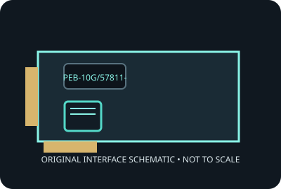

[ MODEL-SPECIFIC NETWORK HARDWARE ]
ASUS PEB-10G/57811-1S 10GbE SFP+ Adapter
Single-port 10GbE SFP+ server adapter using Broadcom 57811S silicon. Record applies to the exact SKU named here; verify the physical label and revision.

IDENTIFICATION: Product label: PEB-10G/57811-1S. Link rates are nominal negotiated signaling rates, not measured throughput.
Specifications and OS compatibility
| Catalog subcategory | Ethernet adapters |
|---|---|
| Exact product SKU | PEB-10G/57811-1S |
| Controller | Broadcom BCM57811S Ethernet controller. |
| Bus, lane and port interface | PCI Express 2.0 x8; one SFP+ cage for supported optical module or DAC. |
| Ports and media | 1 port(s); 10GbE SFP+ interface. |
| Nominal line rate (not measured) | One nominal 10 Gb/s Ethernet link over supported SFP+ media; the installed transceiver/DAC and peer determine supported link. |
| Operating systems and drivers | ASUS documents server OS installation; driver support is provided for supported Windows Server, Linux and FreeBSD configurations depending on release. Confirm the exact OS package with ASUS/Broadcom before deployment. |
| Compatibility notes | Requires a PCIe x8 electrical slot and compatible SFP+ module/cable and switch. Server platform, firmware and OS qualification vary; verify vendor transceiver compatibility and bracket clearance. |
| Measured throughput | No physical specimen benchmark is claimed. A meaningful result must identify host, peer, link partner, media, driver/firmware, traffic pattern, test tool and duration. |
Model and revision notes
Requires a PCIe x8 electrical slot and compatible SFP+ module/cable and switch. Server platform, firmware and OS qualification vary; verify vendor transceiver compatibility and bracket clearance.
Confirm exact card revision, device ID, transceiver/cable type, host firmware, bracket and driver build before installation. Use vendor qualification data for server/NAS deployment.
Preservation and measurement notes
Record card revision, controller marking and driver/firmware versions. Power down before installation; handle by edges and store in ESD shielding.
No measured throughput is represented by the nominal line rate. Record peer, media, negotiated rate, traffic pattern, test tool and duration for any future benchmark.
Manufacturer sources and documentation
- ASUS PEB-10G/57811-1S support pageManufacturer support page for the exact SKU.
- ASUS PEB-10G/57811-1S user manual (PDF)Manufacturer installation and use manual.
- ASUS PEB-10G/57811-1S manuals and support downloadsManufacturer support and document index for the exact adapter; use the board label to verify revision.
Manufacturer documentation takes precedence for exact SKU, board revision and platform qualification; controller-family data alone does not establish card compatibility.